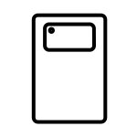
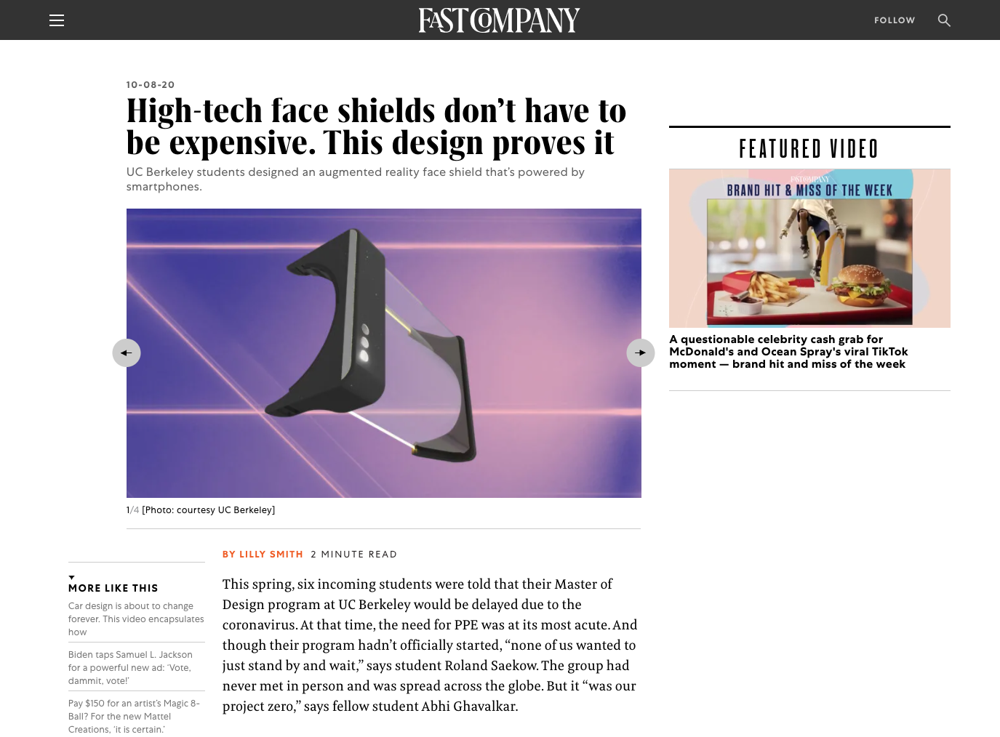

SUPERvisor
SUPERvisor is an enhanced face shield that helps nurses collect COVID-19 test swabs more safely, efficiently, and comfortably. It works by using a smartphone's screen and camera to project an augmented reality experience directly on the face shield. By reusing a smartphone's existing sensors and screen, it achieves a seamless information display system at a fraction of competing solutions.
Role
UX Designer/Researcher, illustrator
location
Berkeley, US
Toolkits
Figma, Adobe PS, AI
Duration
3 weeks
background
What I do
Researched current user experience and discovered design opportunities.
Designed UI/UX and crafted prototypes
Impact
Fast Company 2020 Innovation by Design Awards
Fast Company Innovation by Design Linda Tischler Award
Jacobs Institute of Design Innovation Covid-19 Design Challenge
